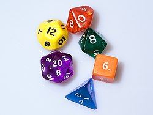

Game mechanics
Before the game begins, each player creates their player character and records the details (described below) on a character sheet. First, a player determines their character's ability scores, which consist of Strength, Constitution, Dexterity, Intelligence, Wisdom, and Charisma. Each edition of the game has offered differing methods of determining these scores.[31] The player then chooses a race (species) such as human or elf, a character class (occupation) such as fighter or wizard, an alignment (a moral and ethical outlook), and other features to round out the character's abilities and backstory, which have varied in nature through differing editions.
|  |
| D&D uses polyhedral dice to resolve in-game events. These are abbreviated by a 'd' followed by the number of sides. Shown counter-clockwise from the bottom are: d4, d6, d8, d10, d12 and d20 dice. A pair of d10 can be used together to represent percentile dice, or d100. |
During the game, players describe their PCs' intended actions, such as punching an opponent or picking a lock, and converse with the DM, who then describes the result or response. Trivial actions, such as picking up a letter or opening an unlocked door, are usually automatically successful. The outcomes of more complex or risky actions are determined by rolling dice. Different polyhedral dice are used for different actions, such as a twenty-sided die to see whether a hit was made in combat, but an eight-sided die to determine how much damage was dealt. Factors contributing to the outcome include the character's ability scores, skills and the difficulty of the task. In circumstances where a character does not have control of an event, such as when a trap or magical effect is triggered or a spell is cast, a saving throw can be used to determine whether the resulting damage is reduced or avoided. In this case the odds of success are influenced by the character's class, levels and ability scores.
As the game is played, each PC changes over time and generally increases in capability. Characters gain (or sometimes lose) experience, skills and wealth, and may even alter their alignment or gain additional character classes. The key way characters progress is by earning experience points (XP), which happens when they defeat an enemy or accomplish a difficult task. Acquiring enough XP allows a PC to advance a level, which grants the character improved class features, abilities and skills. XP can be lost in some circumstances, such as encounters with creatures that drain life energy, or by use of certain magical powers that come with an XP cost
Hit points (HP) are a measure of a character's vitality and health and are determined by the class, level and constitution of each character. They can be temporarily lost when a character sustains wounds in combat or otherwise comes to harm, and loss of HP is the most common way for a character to die in the game. Death can also result from the loss of key ability scores or character levels. When a PC dies, it is often possible for the dead character to be resurrected through magic, although some penalties may be imposed as a result. If resurrection is not possible or not desired, the player may instead create a new PC to resume playing the game.